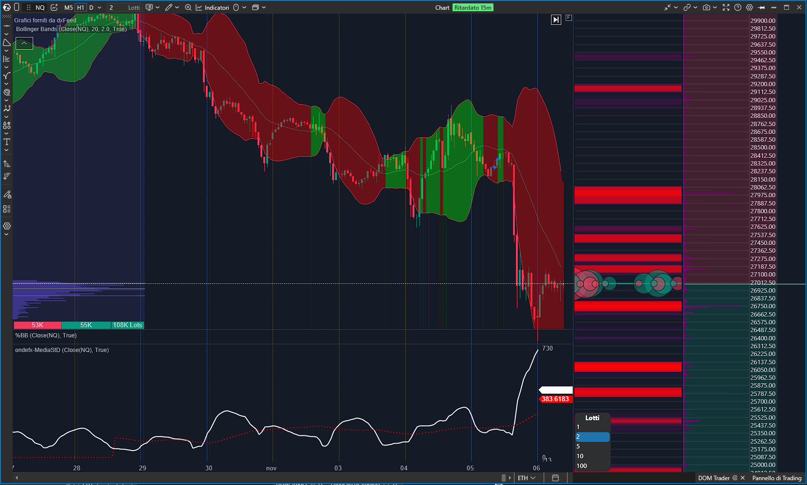
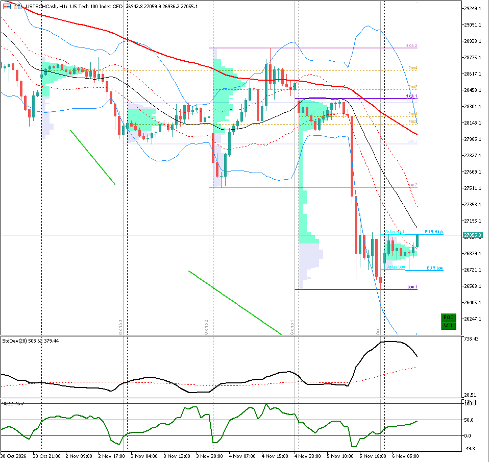
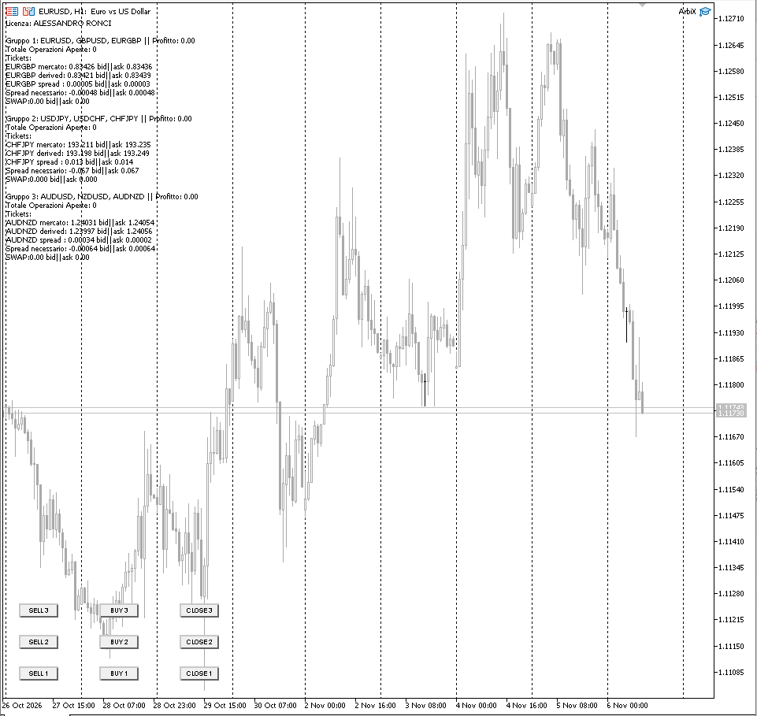

Indicatori personalizzati
Trasformo la tua analisi in un indicatore leggibile sul grafico: livelli, segnali, frecce, avvisi sonori e notifiche. Per MT4, MT5 e ATAS.
Programmo indicatori ed Expert Advisor personalizzati per MetaTrader 4, MetaTrader 5 e ATAS. Tu descrivi le regole, io le scrivo, le collaudo e te le consegno con il codice sorgente.

Dalla singola idea a un sistema completo, con regole chiare e risultati verificabili sui dati storici.
Trasformo la tua analisi in un indicatore leggibile sul grafico: livelli, segnali, frecce, avvisi sonori e notifiche. Per MT4, MT5 e ATAS.
Sistemi automatici che applicano le tue regole di ingresso, uscita e gestione del rischio, senza emozioni e senza dover stare davanti allo schermo.
Hai già un codice che non funziona o che vuoi portare da MT4 a MT5? Lo correggo, lo ottimizzo o lo converto mantenendo la logica originale.
Schermate reali di strumenti sviluppati su richiesta. Clicca sull'immagine per ingrandirla.


Un lavoro professionale non finisce con la consegna del file.
Ricevi i file modificabili, non solo l'eseguibile. Il codice è tuo.
Verifico il comportamento sui dati storici e ti mostro i risultati.
Stop loss, take profit, trailing, lotto fisso o in percentuale del capitale.
Ogni regola è regolabile dalle impostazioni, senza toccare il codice.
Commenti chiari e una breve guida d'uso per installare e configurare.
Correzione di eventuali errori e piccole modifiche nel periodo concordato.
Tempi e costi sono definiti prima di iniziare.
Mi racconti le regole della strategia, anche a voce o con degli screenshot.
Ti indico prezzo e tempi di consegna, dopo aver chiarito ogni dettaglio.
Programmo e collaudo su dati storici e in demo, tenendoti aggiornato.
Ti passo file, sorgente e istruzioni, poi resto a disposizione per le rifiniture.
Le opinioni di chi ha già affidato un progetto.
“[Inserisci qui una testimonianza reale: cosa ha richiesto il cliente e cosa ha apprezzato.]”
Nome CognomeTrader, MT5
“[Inserisci qui una testimonianza reale: tempi di consegna, qualità del codice, assistenza.]”
Nome CognomeTrader, MT4
“[Inserisci qui una testimonianza reale: indicatore o sistema realizzato per ATAS.]”
Nome CognomeTrader, ATAS
Sostituisci i tre riquadri con recensioni vere, con il permesso dei clienti, prima di pubblicare.
Le risposte alle richieste che ricevo più spesso.
Dipende dalla complessità delle regole. Dopo averle viste ti do un preventivo fisso, senza sorprese.
Un indicatore semplice richiede pochi giorni, un Expert Advisor completo di più. I tempi li concordiamo prima di iniziare.
Sì, ricevi i file sorgente insieme al programma e puoi modificarli liberamente.
Sì. Posso scrivere o convertire la stessa logica per entrambe le piattaforme, oppure per ATAS.
No. Io programmo le regole che mi fornisci e verifico che funzionino come descritto. I risultati dipendono dalla strategia e dai mercati.
Scrivimi la tua idea: ti rispondo con una prima valutazione e un preventivo.
Email: ondefx@gmail.com